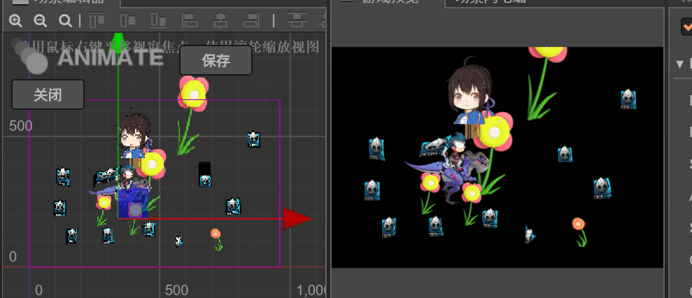

soft2d柔体模拟
qq群：1005282725 商店地址：https://store.cocos.com/#/resources/detail/2549

模拟2d 绳子，布料，和spine柔性骨骼。 本插件只是模拟表现效果，暂时不支持物理碰撞（加班没空搞）。
- 通过单张图片实现绳子或布料效果
- 对spine骨骼添加柔性效果
- 实现风力场，绳子或布料随风飘动
尽力优化，性能高效。示例代码如下
applyLine(mp_arr) { let exF let t = this._t let zoomEnv = this._windPrecision let envs = this._strength let dirs = this._dirStrength let dir = this._directionNormalied let dny,dnx let px,py let get = noise.get //向量计算都展开计算，避免函数调用消耗 //尽量使用了局部变量，避免js index时的hash消耗 //示例场景在手机浏览器里能达到60fps for (let mp of mp_arr) { exF = mp.exF px = mp.wp.x,py = mp.wp.y dnx = get(t + px * zoomEnv, t + py * zoomEnv) + 1 dny = get(t + py * zoomEnv, t + px * zoomEnv) + 1 exF.x = get(t + px * zoomEnv, t + py * zoomEnv) * envs + dir.x * dirs * dnx exF.y = get(t + py * zoomEnv, t + px * zoomEnv) * envs + dir.y * dirs * dny } }- 柔性骨骼